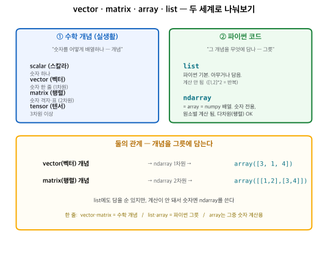

각 줄의 이름이 라이브러리·함수·변수 중 뭔지(보라 사전), 그리고 입력→연산→출력을 함께.
| 화면에 이렇게 나오면 | 모양 | 타입 |
|---|---|---|
| array([[...],[...]]) | 대괄호 2겹 | #1565c0 |
| array([...]) | 대괄호 1겹 | #1565c0 |
| [3, 4, 5, ...] | array 없이 대괄호 | #5f6368 |
| {'k': v, ...} | 중괄호, key:value | #7b1fa2 |
| (400, 60) | 소괄호 | #2e7d32 |

data는 어떻게 생겼나모든 함수가 이 data(dict) 하나를 받아 쓴다. 각 키의 타입·모양:
| 이름 | 타입 · 모양 | 내용 |
| data | dict (6 keys) | 아래 6개를 담은 딕셔너리 |
| data['ctrl'] | ndarray (400,60)·행렬 | control 세포 400 × 유전자 60 |
| data['pert_cells'] | dict {int:ndarray} | perturbation → 세포(100×60), 24개 |
| data['descriptor'] | ndarray (24,4)·행렬 | 각 perturbation 설명자 |
| data['true_shift'] | ndarray (24,60)·행렬 | 각 perturbation 진짜 효과 |
| data['train_ids'] | list[int] 16 | 학습용 번호 |
| data['test_ids'] | list[int] 8 | 테스트 번호 |
1def make_dataset(seed, structured, G=60, N_PERT=24, ...): 2 rng = np.random.default_rng(seed) 3 mu0 = rng.uniform(0.5, 4.0, size=G) 4 state_loadings = rng.normal(0, 0.6, size=(2, G)) 5 def sample_cells(extra_shift, n): 6 z = rng.normal(0, 1, size=(n, 2)) 7 base = mu0 + z @ state_loadings 8 return np.clip(base + extra_shift + noise, 0, None) 9 if structured:10 descriptor = rng.normal(0, 1, size=(N_PERT, K_PROG))11 true_shift = descriptor @ prog_gene12 else:13 true_shift = (독립 랜덤 효과)14 ctrl = sample_cells(0, n_ctrl)15 pert_cells = {p: sample_cells(true_shift[p], 100) ...}16 return dict(ctrl=ctrl, pert_cells=..., ...)